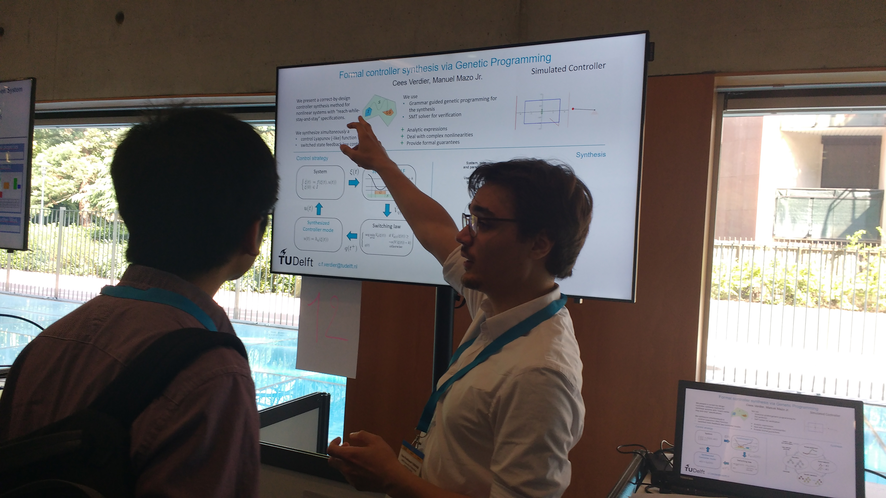

List of publications
Dissertation
- C.F. Verdier.
Formal Synthesis of Analytic Controllers: An Evolutionary Approach.
Online. (2020)
Journals
- C.F. Verdier, N. Kochdumper, M. Althoff, and M. Mazo Jr.
Formal Synthesis of Closed-form Sampled-data Controllers for Nonlinear Continuous-time Systems Under STL Specifications.
arXiv preprint arXiv:2006.04260. (2020) - C.F. Verdier and M. Mazo, Jr.
Formal Controller Synthesis for Hybrid Systems Using Genetic Programming.
arXiv preprint arXiv:2003.14322. (2020)
Conference papers
- C.F. Verdier, R. Babuska, B. Shyrokau and M. Mazo Jr.
Near Optimal Control with Reachability and Safety Guarantees.
5th IFAC Conference on Intelligent Control and Automation Sciences (ICONS). (2019) - C.F. Verdier and M. Mazo.
Formal Controller Synthesis of Analytic Controllers for Sampled-data Systems via Genetic Programming.
57th IEEE Conference on Decision and Control (CDC). (2018) - I.S. Zapreev, C. Verdier, and M. Mazo Jr.
Optimal Symbolic Controllers Determinization for BDD Storage.
6th IFAC Conference on Analysis and Design of Hybrid Systems (ADHS). (2018) - C.F. Verdier and M. Mazo.
Formal Controller Synthesis via Genetic Programming.
IFAC-PapersOnLine. (2017)